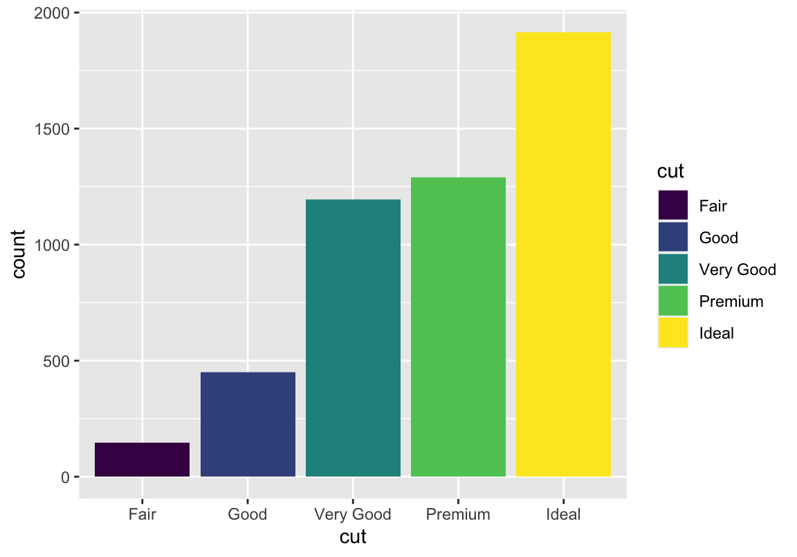
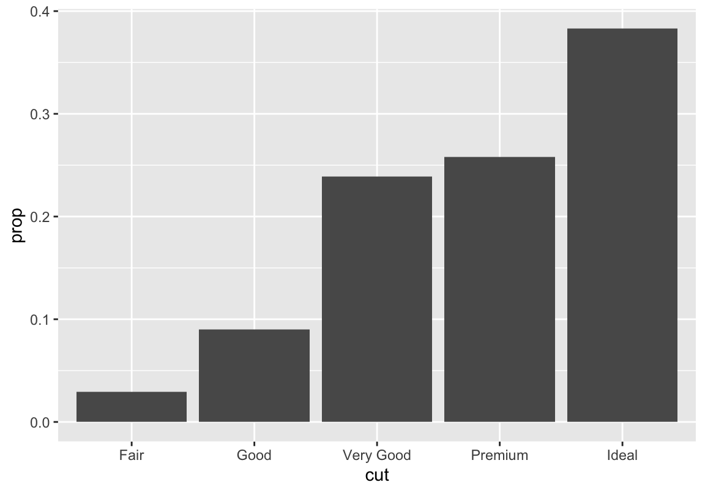
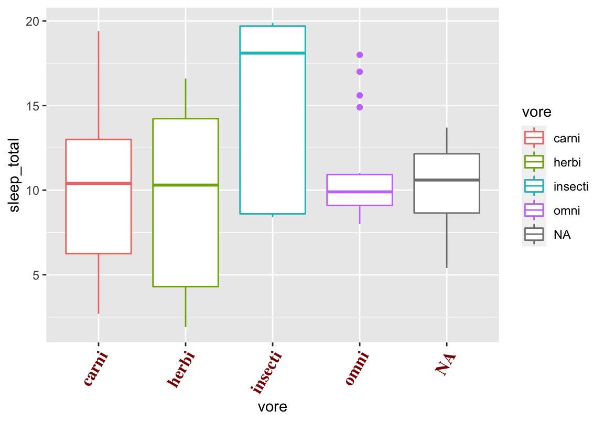
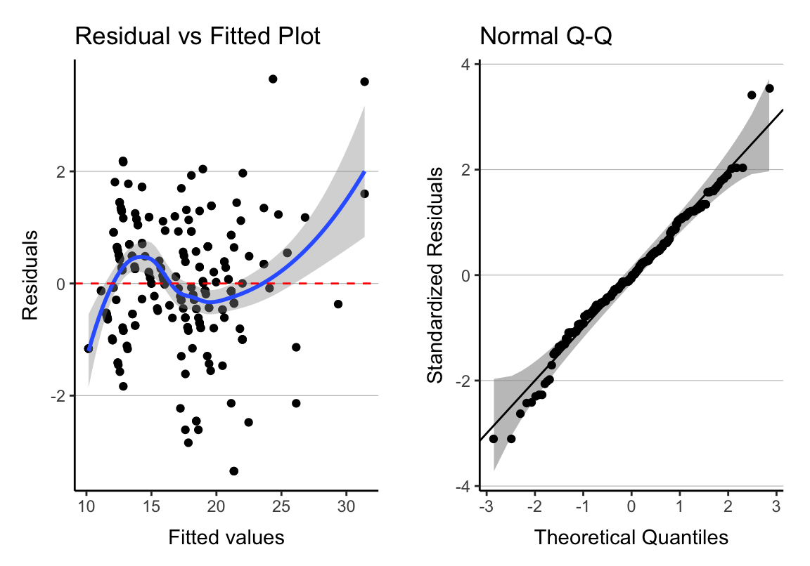
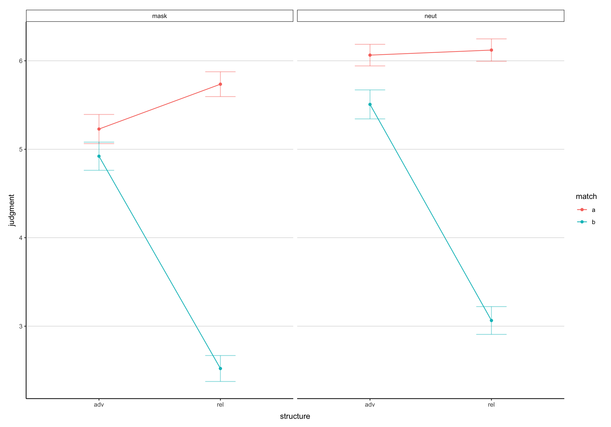

ggplot2
Warum Plots: Anscombes Quartett
Scheinbar gleiche Daten
Diese vier Bedingungen sehen auf den ersten Blick ziemlich gleich aus:
## # A tibble: 4 x 9
## set mean_x mean_y sd_x sd_y cor_xy intercept slope r_squared
## <fct> <dbl> <dbl> <dbl> <dbl> <dbl> <dbl> <dbl> <dbl>
## 1 A 9 7.50 3.32 2.03 0.816 3 0.5 0.667
## 2 B 9 7.50 3.32 2.03 0.816 3.00 0.5 0.666
## 3 C 9 7.5 3.32 2.03 0.816 3.00 0.5 0.666
## 4 D 9 7.50 3.32 2.03 0.817 3.00 0.5 0.667Aber!
Beispiele
Beispiel 1
Beispiel 2
Beispiel 3
Einfache Plots
Daten für den Basisplot
Hier schonmal der Cheat Sheet zu ggplot2, eine weitere Hilfeseite und ein großartiges Tutorial.
Paket laden und Daten präparieren (ich verwende hier “nur” 5000 Beobachtungen, weil es sonst in manchen Plots ziemlich voll wird; das kommt aber ganz auf die Art des Plots an):
## carat cut color clarity depth table price x y z
## 24388 0.41 Very Good D SI2 62.3 61 638 4.72 4.75 2.95
## 43307 0.50 Very Good F VS2 62.8 57 1402 5.05 5.08 3.18
## 4050 1.03 Fair I SI2 65.2 56 3530 6.42 6.35 4.16
## 11571 1.10 Ideal I SI1 62.1 57 5037 6.60 6.64 4.11
## 25173 1.51 Very Good E VS2 63.3 61 13757 7.24 7.17 4.56
## 32618 0.30 Ideal H VS2 62.1 55 457 4.30 4.33 2.68Zu den Daten selbst: “A dataset containing the prices and other attributes of almost 54,000 diamonds.”
ggplot()
Grundgerüst ist der ggplot-Befehl mit Datensatz- und aes-Angaben: Werte auf der \(x\)- und \(y\)-Achse. Dabei sollte die abhängige Variable, hier der Verkaufspreis, die \(y\)-Achse bilden, während die (erste) unabhängige Variable, hier das Gewicht der Diamanten, auf der \(x\)-Achse verortet ist.
Ich speichere diese Angaben unter dem Namen p ab, damit ich später weniger Tipparbeit habe und euch einfach verschiedene Variationen desselben Plots zeigen kann. Nötig ist das aber nicht unbedingt.
Geometrien
Das liegt daran, dass wir ggplot noch nicht gesagt haben, was für eine Art Plot wir haben wollen. Dies machen wir mithilfe sogenannter Geometrien, die wir einfach per + unserem Objekt hinzufügen können. Gängig sind vor allem Scatterplots (geom_point), Linienplots (geom_line) und Balkendiagramme (geom_bar/geom_histogramm)
Geometrien
Falls sich Punkte überlagern: geom_jitter rüttelt ein wenig an den Punkten, damit sie sich nicht länger überschneiden

Mehr Spalten
Was ist, wenn ihr mehr als nur zwei Spalten unterbringen will? \(\rightarrow\) aes erweitern.
Weitere Möglichkeiten:
- fill
- linetype (kurz: lty)
- size
- group
- alphaMehr Spalten
Was ist, wenn ihr mehr als nur zwei Spalten unterbringen will? \(\rightarrow\) aes erweitern:
Häufigkeiten
fill statt color weil wir nicht bloß die Umrandung der Balken einfärben wollen

Häufigkeiten
Zum Unterschied zwischen Histogrammen und Barplots: Ohne weitere Argumente sind Barplots für diskrete Daten und Histogramme für kontinuierliche Daten ausgelegt (ich zeige euch aber gleich, dass man es auch anders machen kann)
Prozente
group = 1 damit Prozente nicht innerhalb der Schliffkategorien berechnet werden (dann hätten wir überall 100%!)

Prozente mit Label
label ändert die Beschriftung
Plots erweitern
Beschriftungen

Plots verschönern
Daten für den Basisplot
## name genus vore order conservation
## 1 Cheetah Acinonyx carni Carnivora lc
## 2 Owl monkey Aotus omni Primates <NA>
## 3 Mountain beaver Aplodontia herbi Rodentia nt
## 4 Greater short-tailed shrew Blarina omni Soricomorpha lc
## 5 Cow Bos herbi Artiodactyla domesticated
## 6 Three-toed sloth Bradypus herbi Pilosa <NA>
## sleep_total sleep_rem sleep_cycle awake brainwt bodywt
## 1 12.1 NA NA 11.9 NA 50.000
## 2 17.0 1.8 NA 7.0 0.01550 0.480
## 3 14.4 2.4 NA 9.6 NA 1.350
## 4 14.9 2.3 0.1333333 9.1 0.00029 0.019
## 5 4.0 0.7 0.6666667 20.0 0.42300 600.000
## 6 14.4 2.2 0.7666667 9.6 NA 3.850Möglichkeit 1
cleanup = theme(axis.line.x = element_line(color = "black"),
axis.line.y = element_line(color = "black"),
panel.background = element_rect(fill = "transparent", colour = NA),
panel.grid.major = element_line(size = .2, color = "gray"),
panel.grid.major.x = element_blank(),
legend.background = element_rect(fill = "transparent"),
axis.title.x = element_text(vjust = -1),
axis.title.y = element_text(vjust = 2),
plot.margin = unit(c(.5, .5, .5, .5), "cm"),
strip.background = element_rect(colour = "black", fill = "transparent"),
legend.key = element_blank()
)ggthemes
library(ggthemes)
+theme_base() # looks like basic R plot
+theme_tufte()
+theme_minimal()
+theme_gray()
+theme_few()
+theme_wsj()
+theme_economist()
+theme_fivethirtyeight()
+theme_stata()
+theme_hc()
+theme_solarized()
+theme_pander()
+theme_void()
+theme_linedraw()
# to change the font or its size in a theme, use
+theme_bw(base_family = "Times", base_size = "10")Schriftarten
Legende verändern
Achsenbeschriftung
p + theme(axis.text.x = element_text(angle = 60, hjust = 1,
colour = "darkred", size = 12,
family = "serif", face = "bold"))
Farbreferenz
Mögliche Farben: http://sape.inf.usi.ch/quick-reference/ggplot2/colour
Vordefinierte Farbpaletten: https://github.com/EmilHvitfeldt/r-color-palettes/blob/master/README.md
Mein Favorit: https://www.data-imaginist.com/2018/scico-and-the-colour-conundrum/
Palettenvorschau
Plot speichern
Plots verbinden
stat_summary()
Line Plot
d <- subset(d, d$conservation %in% c("domesticated", "lc"))
p <- ggplot(d, aes(x = vore, y = sleep_total,
color = conservation, group = conservation)) +
stat_summary(fun.y = mean, geom = "line") +
stat_summary(fun.y = mean, geom = "point") +
labs(x = "Trophische Ebene",
y = "Mittlere Schlafenszeit in Stunden",
title = "Ein Linienplot")Fehlerbalken
Fehlerbalken
Standardfehler
Andere Fehlerbalken
Standardfehler vs Standardabweichung
Andere Fehlerbalken
95% Konfidenzintervall
Diagnostische Plots
Diagnostikfunktion
library(qqplotr) # stat_qq_band
diagPlot <- function(model) {
p1 <- ggplot(model, aes(.fitted, .resid)) + geom_point()
p1 <- p1 + stat_smooth(method = "loess")
p1 <- p1 + geom_hline(yintercept = 0, col = "red",
linetype = "dashed")
p1 <- p1 + labs(x = "Fitted values", y = "Residuals",
title = "Residual vs Fitted Plot")
p2 <- ggplot(model, aes(qqnorm(.stdresid)[[1]], .stdresid))
p2 <- p2 + stat_qq_band(mapping = aes(sample = qqnorm(.stdresid)[[1]]),
alpha = .6)
p2 <- p2 + geom_point(na.rm = TRUE) + geom_abline()
p2 <- p2 + labs(x = "Theoretical Quantiles",
y = "Standardized Residuals",
title = "Normal Q-Q")
return(list(rvfPlot = p1, qqPlot = p2))
}Plots
diagPlts <- diagPlot(lm(cty ~ displ * hwy, data = mpg))
plot <- grid.arrange(grobs = diagPlts, ncol = 2)
Weitere Alternative
Von mir nicht getestet! Erstellt die bekannten diagnostischen Plots.
Normalverteilung
Normalverteilung: Daten
# sicherstellen, dass ihr die gleichen "zufällig"
# erstellten daten bekommt
set.seed(1)
# normalverteile daten generieren
a <- rnorm(250, mean = 2, sd = 1)
b <- rnorm(250, mean = 4.5, sd = 1)
# datenblatt erstellen
d <- data.frame(a, b)
# daten kombinieren und neues datenblatt
ab <- c(a, b)
d2 <- data.frame(ab)shapiro.test
##
## Shapiro-Wilk normality test
##
## data: a
## W = 0.9964, p-value = 0.8398##
## Shapiro-Wilk normality test
##
## data: b
## W = 0.9968, p-value = 0.897##
## Shapiro-Wilk normality test
##
## data: ab
## W = 0.98647, p-value = 0.0001351Normalverteilung: Daten
# beide Verteilungen getrennt
p1 <- ggplot(d) + geom_histogram(mapping = aes(x = a, y = ..density..),
fill = "#19278e", alpha = .5) +
stat_function(fun = dnorm,
args = list(mean = mean(d$a), sd = sd(d$a)),
color = "#19278e", geom = "line") +
geom_histogram(mapping = aes(x = b, y = ..density..),
fill = "#BC0D0D", alpha = .5) +
stat_function(fun = dnorm,
args = list(mean = mean(d$b), sd = sd(d$b)),
color = "#BC0D0D", geom = "line") +
cleanup
# beide Verteilungen kombiniert
p2 <- ggplot(d2) + geom_histogram(mapping = aes(x = ab, y = ..density..),
fill = "#621b54", alpha = .5) +
stat_density(aes(x = ab, y = ..density..),
color = "#BC0D0D",
adjust = 1,
geom = "line") +
stat_function(fun = dnorm,
args = list(mean = mean(d2$ab), sd = sd(d2$ab)),
color = "#19278e", geom = "line") +
cleanupBoxplot verbessern
Mittelwerte in Boxplots

Tufte-Boxplots
Übung
- Baut den folgenden Plot (“class_cl.csv”) nach.
Lösung
- Baut den folgenden Plot mit “class_cl.csv” nach.
Übung II
- Baut den folgenden Plot mit “complex.csv” nach.

Lösung II
- Baut den folgenden Plot mit “complex.csv” nach.
d <- read.csv("docs/data/tutgg/complex.csv")
p <- ggplot(d, aes(x = structure, y = judgment,
color = match, group = match)) +
stat_summary(fun.y = mean, geom = "line") +
stat_summary(fun.y = mean, geom = "point") +
stat_summary(fun.data = mean_se, geom = "errorbar",
width = 0.25, alpha = .5, linetype = 1) +
facet_wrap(~gender) +
cleanupBonus: Pimp My Boxplot
Paper, die ihr lesen solltet:
Weissgerber et al. (2015): Beyond Bar and Line Graphs: Time for a New Data Presentation Paradigm
Arbeitsstreik
Wir sehen uns nächste Woche!